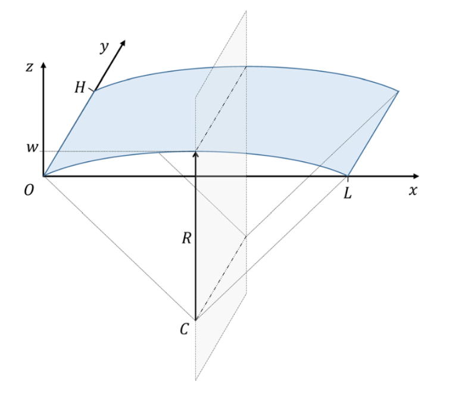
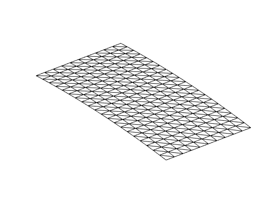
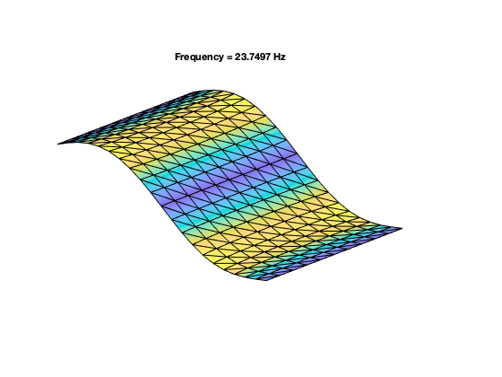
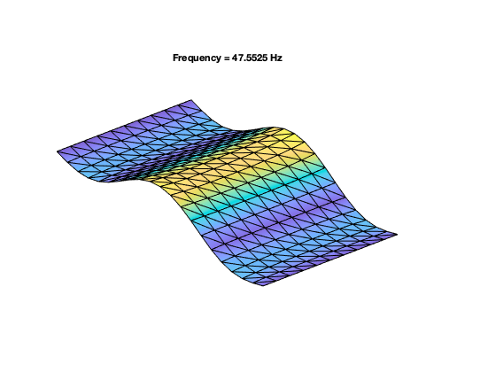
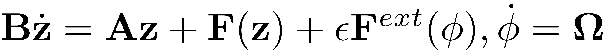
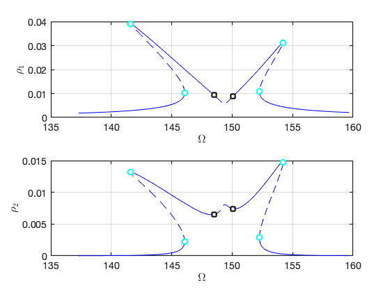
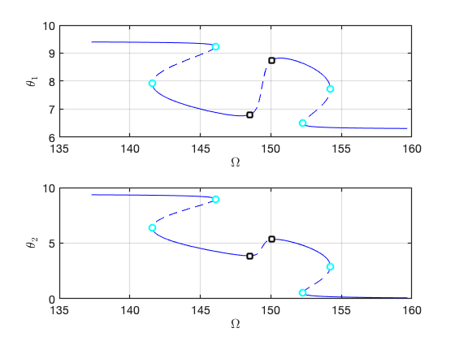
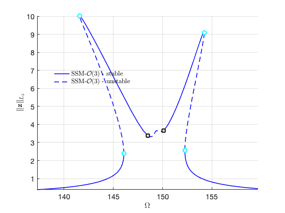
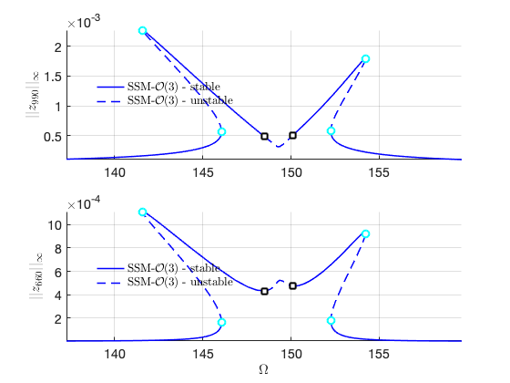

Shallow-curved shell structure with geometric nonlinearities
Contents
References
Finite element model used in the following reference:
Jain, S., & Tiso, P. (2018). Simulation-free hyper-reduction for geometrically nonlinear structural dynamics: a quadratic manifold lifting approach. Journal of Computational and Nonlinear Dynamics, 13(7), 071003. <https://doi.org/10.1115/1.4040021>
Finite element code taken from the following package:
Jain, S., Marconi, J., Tiso P. (2020). YetAnotherFEcode (Version v1.1). Zenodo. <http://doi.org/10.5281/zenodo.4011282>
System parameters
clear all nDiscretization = 10; % Discretization parameter (#DOFs is proportional to the square of this number) epsilon = 0.1; % converge at order 5
Generate model
[M,C,K,fnl,f_0,outdof] = build_model(nDiscretization); n = length(M); % number of degrees of freedom disp(['Number of degrees of freedom = ' num2str(n)]) disp(['Phase space dimensionality = ' num2str(2*n)])
Building FE model Assembling M,C,K matrices Applying boundary conditions Solving undamped eigenvalue problem Using Rayleigh damping Assembling external force vector Getting nonlinearity coefficients Loaded tensors from storage Total time spent on model assembly = 00:00:50 Number of degrees of freedom = 1320 Phase space dimensionality = 2640  
Dynamical system setup
We consider the forced system

which can be written in the first-order form as

where
![$\mathbf{z}=\left[\begin{array}{c}\mathbf{x}\\\dot{\mathbf{x}}\end{array}\right],\quad\mathbf{A}=\left[\begin{array}{cc}-\mathbf{K} & \mathbf{0}\\\mathbf{0} & \mathbf{M}\end{array}\right],\mathbf{B}=\left[\begin{array}{cc}\mathbf{C} & \mathbf{M}\\\mathbf{M} & \mathbf{0}\end{array}\right],\quad\quad\mathbf{F}(\mathbf{z})=\left[\begin{array}{c}\mathbf{-\mathbf{f}(\mathbf{x},\dot{\mathbf{x}})}\\\mathbf{0}\end{array}\right],\quad\mathbf{F}^{ext}(\mathbf{z},\mathbf{\phi})=\left[\begin{array}{c}\mathbf{f}^{ext}(\mathbf{\phi})\\\mathbf{0}\end{array}\right]$](vonKarmanShellDoc_eq06277547758420750616-Rescaled.png) .
.
DS = DynamicalSystem(); set(DS,'M',M,'C',C,'K',K,'fnl',fnl); set(DS.Options,'Emax',5,'Nmax',10,'notation','multiindex')
We assume periodic forcing of the form

Fourier coefficients of Forcing
kappas = [-1; 1]; coeffs = [f_0 f_0]/2; DS.add_forcing(coeffs, kappas,epsilon);
Linear Modal analysis and SSM setup
[V,D,W] = DS.linear_spectral_analysis();
Due to high-dimensionality, we compute only the first 5 eigenvalues with the smallest magnitude. These would also be used to compute the spectral quotients Assuming a proportional damping hypthesis with symmetric matrices modal damping ratio for 1 mode is 2.000000e-03 modal damping ratio for 2 mode is 2.000000e-03 modal damping ratio for 3 mode is 2.102524e-03 modal damping ratio for 4 mode is 2.141338e-03 modal damping ratio for 5 mode is 2.369557e-03 the left eigenvectors may be incorrect in case of asymmetry of matrices The first 10 nonzero eigenvalues are given as 1.0e+02 * -0.0030 + 1.4922i -0.0030 - 1.4922i -0.0060 + 2.9878i -0.0060 - 2.9878i -0.0071 + 3.3973i -0.0071 - 3.3973i -0.0076 + 3.5356i -0.0076 - 3.5356i -0.0101 + 4.2617i -0.0101 - 4.2617i
Choose Master subspace (perform resonance analysis)
S = SSM(DS); set(S.Options, 'reltol', 0.1,'notation','multiindex') % set(S.Options, 'reltol', 0.1,'notation','tensor') masterModes = [1,2,3,4]; S.choose_E(masterModes);
The master subspace contains the following eigenvalues lambda1 == - 0.2984479 + 149.2236i lambda2 == (-0.2984479) - 149.2236i lambda3 == - 0.5975624 + 298.7806i lambda4 == (-0.5975624) - 298.7806i No (near) outer resonances detected in the (truncated) spectrum sigma_out = 3 (near) inner resonance detected for the following combination of master eigenvalues: 0*lambda1 + 1*lambda2 + 1*lambda3 + 0*lambda4 == lambda1 1*lambda1 + 0*lambda2 + 1*lambda3 + 1*lambda4 == lambda1 2*lambda1 + 1*lambda2 + 0*lambda3 + 0*lambda4 == lambda1 1*lambda1 + 0*lambda2 + 0*lambda3 + 1*lambda4 == lambda2 0*lambda1 + 1*lambda2 + 1*lambda3 + 1*lambda4 == lambda2 1*lambda1 + 2*lambda2 + 0*lambda3 + 0*lambda4 == lambda2 2*lambda1 + 0*lambda2 + 0*lambda3 + 0*lambda4 == lambda3 0*lambda1 + 0*lambda2 + 2*lambda3 + 1*lambda4 == lambda3 1*lambda1 + 1*lambda2 + 1*lambda3 + 0*lambda4 == lambda3 0*lambda1 + 2*lambda2 + 0*lambda3 + 0*lambda4 == lambda4 0*lambda1 + 0*lambda2 + 1*lambda3 + 2*lambda4 == lambda4 1*lambda1 + 1*lambda2 + 0*lambda3 + 1*lambda4 == lambda4 sigma_in = 3
Forced response curves using SSMs
Obtaining forced response curve in reduced-polar coordinate
order = 3; set(S.Options, 'reltol', 0.5,'IRtol',0.05,'notation', 'multiindex','contribNonAuto',true)
choose frequency range around the first natural frequency
set(S.FRCOptions,'coordinates','polar','initialSolver','forward'); set(S.contOptions, 'h_min', 1e-2,'h_max',2,'PtMX',300); omega0 = imag(S.E.spectrum(1)); omegaRange = omega0*[0.92 1.07]; mFreq = [1 2];
extract forced response curve
p0 = [omegaRange(1) epsilon]'; z0 = 1e-3*[1 1 1 1]'; S.SSM_isol2ep('isol-3',masterModes,order,mFreq,'freq',omegaRange,outdof,{p0,z0});
The master subspace contains the following eigenvalues
lambda1 == - 0.2984479 + 149.2236i
lambda2 == (-0.2984479) - 149.2236i
lambda3 == - 0.5975624 + 298.7806i
lambda4 == (-0.5975624) - 298.7806i
(near) outer resonance detected for the following combinations of master eigenvalues
They are in resonance with the following eigenvalues of the slave subspace
2*lambda1 + 0*lambda2 + 0*lambda3 + 0*lambda4 == - 0.7143022 + 339.7348i
0*lambda1 + 0*lambda2 + 2*lambda3 + 1*lambda4 == - 0.7143022 + 339.7348i
1*lambda1 + 1*lambda2 + 1*lambda3 + 0*lambda4 == - 0.7143022 + 339.7348i
0*lambda1 + 2*lambda2 + 0*lambda3 + 0*lambda4 == (-0.7143022) - 339.7348i
0*lambda1 + 0*lambda2 + 1*lambda3 + 2*lambda4 == (-0.7143022) - 339.7348i
1*lambda1 + 1*lambda2 + 0*lambda3 + 1*lambda4 == (-0.7143022) - 339.7348i
2*lambda1 + 0*lambda2 + 0*lambda3 + 0*lambda4 == - 0.7570953 + 353.561i
0*lambda1 + 0*lambda2 + 2*lambda3 + 1*lambda4 == - 0.7570953 + 353.561i
1*lambda1 + 1*lambda2 + 1*lambda3 + 0*lambda4 == - 0.7570953 + 353.561i
0*lambda1 + 2*lambda2 + 0*lambda3 + 0*lambda4 == (-0.7570953) - 353.561i
0*lambda1 + 0*lambda2 + 1*lambda3 + 2*lambda4 == (-0.7570953) - 353.561i
1*lambda1 + 1*lambda2 + 0*lambda3 + 1*lambda4 == (-0.7570953) - 353.561i
1*lambda1 + 0*lambda2 + 1*lambda3 + 0*lambda4 == - 1.009829 + 426.1665i
0*lambda1 + 1*lambda2 + 2*lambda3 + 0*lambda4 == - 1.009829 + 426.1665i
3*lambda1 + 0*lambda2 + 0*lambda3 + 0*lambda4 == - 1.009829 + 426.1665i
0*lambda1 + 1*lambda2 + 0*lambda3 + 1*lambda4 == (-1.009829) - 426.1665i
0*lambda1 + 3*lambda2 + 0*lambda3 + 0*lambda4 == (-1.009829) - 426.1665i
1*lambda1 + 0*lambda2 + 0*lambda3 + 2*lambda4 == (-1.009829) - 426.1665i
sigma_out = 3
(near) inner resonance detected for the following combination of master eigenvalues:
0*lambda1 + 1*lambda2 + 1*lambda3 + 0*lambda4 == lambda1
1*lambda1 + 0*lambda2 + 1*lambda3 + 1*lambda4 == lambda1
2*lambda1 + 1*lambda2 + 0*lambda3 + 0*lambda4 == lambda1
1*lambda1 + 0*lambda2 + 0*lambda3 + 1*lambda4 == lambda2
0*lambda1 + 1*lambda2 + 1*lambda3 + 1*lambda4 == lambda2
1*lambda1 + 2*lambda2 + 0*lambda3 + 0*lambda4 == lambda2
2*lambda1 + 0*lambda2 + 0*lambda3 + 0*lambda4 == lambda3
0*lambda1 + 0*lambda2 + 2*lambda3 + 1*lambda4 == lambda3
1*lambda1 + 1*lambda2 + 1*lambda3 + 0*lambda4 == lambda3
0*lambda1 + 2*lambda2 + 0*lambda3 + 0*lambda4 == lambda4
0*lambda1 + 0*lambda2 + 1*lambda3 + 2*lambda4 == lambda4
1*lambda1 + 1*lambda2 + 0*lambda3 + 1*lambda4 == lambda4
sigma_in = 3
Due to (near) outer resonance, the exisitence of the manifold is questionable and the underlying computation may suffer.
Attempting manifold computation
Manifold computation time at order 2 = 00:00:01
Estimated memory usage at order 2 = 1.52E+01 MB
Manifold computation time at order 3 = 00:00:04
Estimated memory usage at order 3 = 2.00E+01 MB
Run='isol-3.ep': Continue equilibria along primary branch.
STEP DAMPING NORMS COMPUTATION TIMES
IT SIT GAMMA ||d|| ||f|| ||U|| F(x) DF(x) SOLVE
0 2.47e+01 1.95e+02 0.0 0.0 0.0
1 3 5.15e-02 8.19e+00 2.18e+01 1.95e+02 0.0 0.0 0.0
2 4 7.70e-03 2.58e+01 2.14e+01 1.95e+02 0.0 0.0 0.0
3 4 2.54e-02 8.05e+00 2.23e+01 1.95e+02 0.0 0.0 0.0
4 2 2.01e-01 4.19e+00 2.21e+01 1.95e+02 0.0 0.0 0.0
5 3 1.04e-01 4.52e+00 1.62e+01 1.95e+02 0.0 0.1 0.0
6 2 5.00e-01 1.61e+00 1.27e+01 1.95e+02 0.0 0.1 0.0
7 1 1.00e+00 6.79e-01 1.87e+00 1.95e+02 0.0 0.1 0.0
8 1 1.00e+00 2.84e-02 1.21e-01 1.95e+02 0.0 0.1 0.0
9 1 1.00e+00 1.71e-04 6.03e-04 1.95e+02 0.0 0.1 0.0
10 1 1.00e+00 8.73e-07 1.52e-08 1.95e+02 0.0 0.1 0.0
STEP TIME ||U|| LABEL TYPE om rho1 rho2 th1 th2 eps
0 00:00:00 1.9480e+02 1 EP 1.3729e+02 1.8257e-03 -1.9374e-05 9.3997e+00 6.2084e+00 1.0000e-01
10 00:00:01 1.9832e+02 2 1.3978e+02 2.3109e-03 -3.9086e-05 9.3930e+00 6.1886e+00 1.0000e-01
20 00:00:01 2.0181e+02 3 1.4226e+02 3.1504e-03 -9.7874e-05 9.3812e+00 6.1543e+00 1.0000e-01
30 00:00:01 2.0476e+02 4 1.4435e+02 4.6058e-03 -2.9548e-04 9.3597e+00 6.0941e+00 1.0000e-01
40 00:00:02 2.0692e+02 5 1.4590e+02 7.9885e-03 -1.2747e-03 9.2965e+00 5.9429e+00 1.0000e-01
50 00:00:02 2.0715e+02 6 1.4607e+02 1.0170e-02 -2.1632e-03 9.2434e+00 5.8335e+00 1.0000e-01
52 00:00:02 2.0715e+02 7 SN 1.4607e+02 1.0370e-02 -2.2491e-03 9.2381e+00 5.8230e+00 1.0000e-01
52 00:00:02 2.0715e+02 8 FP 1.4607e+02 1.0370e-02 -2.2491e-03 9.2381e+00 5.8230e+00 1.0000e-01
60 00:00:03 2.0711e+02 9 1.4604e+02 1.1525e-02 -2.7508e-03 9.2068e+00 5.7617e+00 1.0000e-01
70 00:00:03 2.0549e+02 10 1.4493e+02 2.0721e-02 -6.6023e-03 8.9307e+00 5.2358e+00 1.0000e-01
80 00:00:03 2.0062e+02 11 1.4159e+02 3.9002e-02 -1.3080e-02 7.9663e+00 3.3419e+00 1.0000e-01
83 00:00:04 2.0059e+02 12 FP 1.4158e+02 3.9122e-02 -1.3141e-02 7.9152e+00 3.2399e+00 1.0000e-01
83 00:00:04 2.0059e+02 13 SN 1.4158e+02 3.9122e-02 -1.3141e-02 7.9152e+00 3.2399e+00 1.0000e-01
90 00:00:04 2.0079e+02 14 1.4174e+02 3.8710e-02 -1.3132e-02 7.7161e+00 2.8408e+00 1.0000e-01
100 00:00:04 2.0431e+02 15 1.4429e+02 2.8008e-02 -1.0421e-02 7.1018e+00 1.5904e+00 1.0000e-01
105 00:00:05 2.1024e+02 16 HB 1.4851e+02 9.2835e-03 -6.4952e-03 6.8061e+00 7.2639e-01 1.0000e-01
110 00:00:05 2.1089e+02 17 1.4896e+02 7.1732e-03 -7.0339e-03 7.0098e+00 8.4208e-01 1.0000e-01
120 00:00:05 2.1201e+02 18 1.4966e+02 6.7811e-03 -7.7963e-03 8.4476e+00 1.9807e+00 1.0000e-01
128 00:00:06 2.1263e+02 19 HB 1.5008e+02 8.9257e-03 -7.3949e-03 8.7516e+00 2.1929e+00 1.0000e-01
130 00:00:06 2.1283e+02 20 1.5022e+02 9.6296e-03 -7.3882e-03 8.7873e+00 2.2045e+00 1.0000e-01
140 00:00:06 2.1651e+02 21 1.5286e+02 2.3721e-02 -1.1735e-02 8.5044e+00 1.3785e+00 1.0000e-01
150 00:00:06 2.1837e+02 22 1.5421e+02 3.1204e-02 -1.4754e-02 7.7457e+00 -1.6582e-01 1.0000e-01
151 00:00:07 2.1837e+02 23 SN 1.5422e+02 3.1152e-02 -1.4699e-02 7.7170e+00 -2.2320e-01 1.0000e-01
151 00:00:07 2.1837e+02 24 FP 1.5422e+02 3.1152e-02 -1.4699e-02 7.7170e+00 -2.2321e-01 1.0000e-01
160 00:00:07 2.1761e+02 25 1.5370e+02 2.6140e-02 -1.1525e-02 7.1806e+00 -1.2858e+00 1.0000e-01
170 00:00:07 2.1555e+02 26 1.5226e+02 1.0990e-02 -2.9825e-03 6.5057e+00 -2.5944e+00 1.0000e-01
172 00:00:07 2.1555e+02 27 FP 1.5226e+02 1.0760e-02 -2.8585e-03 6.4981e+00 -2.6094e+00 1.0000e-01
172 00:00:07 2.1555e+02 28 SN 1.5226e+02 1.0760e-02 -2.8585e-03 6.4981e+00 -2.6094e+00 1.0000e-01
180 00:00:08 2.1560e+02 29 1.5229e+02 9.4945e-03 -2.1942e-03 6.4585e+00 -2.6896e+00 1.0000e-01
190 00:00:08 2.1609e+02 30 1.5264e+02 7.1876e-03 -1.1193e-03 6.3975e+00 -2.8218e+00 1.0000e-01
200 00:00:08 2.1794e+02 31 1.5394e+02 4.7208e-03 -3.4423e-04 6.3504e+00 -2.9419e+00 1.0000e-01
210 00:00:09 2.2031e+02 32 1.5563e+02 3.4198e-03 -1.3193e-04 6.3306e+00 -2.9989e+00 1.0000e-01
220 00:00:09 2.2315e+02 33 1.5763e+02 2.5927e-03 -5.7366e-05 6.3189e+00 -3.0340e+00 1.0000e-01
229 00:00:09 2.2602e+02 34 EP 1.5967e+02 2.0856e-03 -2.9775e-05 6.3118e+00 -3.0553e+00 1.0000e-01
FRC in parametrisation space:
 FRC in physical space:
 Increase order to check convergence
order = 5; sol = ep_read_solution('','isol-3.ep',1); set(S.FRCOptions,'initialSolver','fsolve'); S.SSM_isol2ep('isol-5',masterModes,order,mFreq,'freq',omegaRange,outdof,{sol.p,sol.x});
Due to (near) outer resonance, the exisitence of the manifold is questionable and the underlying computation may suffer.
Attempting manifold computation
Manifold computation time at order 2 = 00:00:01
Estimated memory usage at order 2 = 1.52E+01 MB
Manifold computation time at order 3 = 00:00:04
Estimated memory usage at order 3 = 2.00E+01 MB
Manifold computation time at order 4 = 00:00:19
Estimated memory usage at order 4 = 3.14E+01 MB
Manifold computation time at order 5 = 00:01:14
Estimated memory usage at order 5 = 4.91E+01 MB
Equation solved, inaccuracy possible.
The vector of function values is near zero, as measured by the value
of the function tolerance. However, the last step was ineffective.
Run='isol-5.ep': Continue equilibria along primary branch.
STEP DAMPING NORMS COMPUTATION TIMES
IT SIT GAMMA ||d|| ||f|| ||U|| F(x) DF(x) SOLVE
0 1.89e-13 1.95e+02 0.0 0.0 0.0
STEP TIME ||U|| LABEL TYPE om rho1 rho2 th1 th2 eps
0 00:00:00 1.9465e+02 1 EP 1.3729e+02 1.8257e-03 1.9374e-05 3.1165e+00 9.3500e+00 1.0000e-01
10 00:00:00 1.9817e+02 2 1.3978e+02 2.3109e-03 3.9085e-05 3.1098e+00 9.3302e+00 1.0000e-01
20 00:00:00 2.0167e+02 3 1.4226e+02 3.1504e-03 9.7874e-05 3.0980e+00 9.2960e+00 1.0000e-01
30 00:00:01 2.0461e+02 4 1.4435e+02 4.6060e-03 2.9549e-04 3.0765e+00 9.2359e+00 1.0000e-01
40 00:00:01 2.0678e+02 5 1.4590e+02 7.9849e-03 1.2733e-03 3.0135e+00 9.0853e+00 1.0000e-01
50 00:00:01 2.0701e+02 6 1.4607e+02 1.0180e-02 2.1685e-03 2.9601e+00 8.9756e+00 1.0000e-01
52 00:00:02 2.0701e+02 7 SN 1.4607e+02 1.0379e-02 2.2540e-03 2.9549e+00 8.9653e+00 1.0000e-01
52 00:00:02 2.0701e+02 8 FP 1.4607e+02 1.0379e-02 2.2540e-03 2.9549e+00 8.9653e+00 1.0000e-01
60 00:00:02 2.0696e+02 9 1.4604e+02 1.1540e-02 2.7591e-03 2.9236e+00 8.9041e+00 1.0000e-01
70 00:00:02 2.0538e+02 10 1.4496e+02 2.0617e-02 6.5876e-03 2.6555e+00 8.3955e+00 1.0000e-01
80 00:00:03 1.9989e+02 11 1.4119e+02 4.1301e-02 1.4043e-02 1.6514e+00 6.4331e+00 1.0000e-01
82 00:00:03 1.9988e+02 12 SN 1.4118e+02 4.1370e-02 1.4081e-02 1.6184e+00 6.3671e+00 1.0000e-01
82 00:00:03 1.9988e+02 13 FP 1.4118e+02 4.1370e-02 1.4081e-02 1.6184e+00 6.3671e+00 1.0000e-01
90 00:00:03 2.0006e+02 14 1.4133e+02 4.0923e-02 1.4043e-02 1.4379e+00 6.0051e+00 1.0000e-01
100 00:00:03 2.0385e+02 15 1.4406e+02 2.9134e-02 1.0860e-02 8.3227e-01 4.7670e+00 1.0000e-01
106 00:00:04 2.1009e+02 16 HB 1.4851e+02 9.2759e-03 6.5035e-03 5.2382e-01 3.8689e+00 1.0000e-01
110 00:00:04 2.1070e+02 17 1.4893e+02 7.2835e-03 6.9855e-03 7.0773e-01 3.9708e+00 1.0000e-01
120 00:00:04 2.1167e+02 18 1.4958e+02 6.3954e-03 7.9255e-03 2.0297e+00 5.0147e+00 1.0000e-01
128 00:00:05 2.1241e+02 19 HB 1.5008e+02 8.9103e-03 7.3970e-03 2.4663e+00 5.3325e+00 1.0000e-01
130 00:00:05 2.1267e+02 20 1.5027e+02 9.8418e-03 7.3997e-03 2.5105e+00 5.3449e+00 1.0000e-01
140 00:00:05 2.1648e+02 21 1.5299e+02 2.4432e-02 1.2090e-02 2.1633e+00 4.4052e+00 1.0000e-01
150 00:00:06 2.1798e+02 22 1.5410e+02 3.0215e-02 1.4322e-02 1.4309e+00 2.9206e+00 1.0000e-01
151 00:00:06 2.1798e+02 23 FP 1.5410e+02 3.0196e-02 1.4303e-02 1.4219e+00 2.9027e+00 1.0000e-01
151 00:00:06 2.1798e+02 24 SN 1.5410e+02 3.0196e-02 1.4303e-02 1.4219e+00 2.9027e+00 1.0000e-01
160 00:00:06 2.1705e+02 25 1.5347e+02 2.4198e-02 1.0472e-02 8.0375e-01 1.6776e+00 1.0000e-01
170 00:00:07 2.1532e+02 26 FP 1.5226e+02 1.0769e-02 2.8653e-03 2.1546e-01 5.3421e-01 1.0000e-01
170 00:00:07 2.1532e+02 27 SN 1.5226e+02 1.0769e-02 2.8653e-03 2.1546e-01 5.3421e-01 1.0000e-01
170 00:00:07 2.1532e+02 28 1.5226e+02 1.0694e-02 2.8248e-03 2.1299e-01 5.2926e-01 1.0000e-01
180 00:00:07 2.1540e+02 29 1.5231e+02 9.2526e-03 2.0721e-03 1.6824e-01 4.3812e-01 1.0000e-01
190 00:00:08 2.1614e+02 30 1.5283e+02 6.5938e-03 8.8959e-04 1.0143e-01 2.8932e-01 1.0000e-01
200 00:00:08 2.1805e+02 31 1.5418e+02 4.4740e-03 2.9387e-04 6.3268e-02 1.8878e-01 1.0000e-01
210 00:00:08 2.2050e+02 32 1.5592e+02 3.2669e-03 1.1499e-04 4.5243e-02 1.3621e-01 1.0000e-01
220 00:00:08 2.2341e+02 33 1.5797e+02 2.4913e-03 5.0867e-05 3.4287e-02 1.0337e-01 1.0000e-01
228 00:00:09 2.2581e+02 34 EP 1.5967e+02 2.0856e-03 2.9774e-05 2.8651e-02 8.6370e-02 1.0000e-01